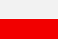

|
Länderinformationen Polen
1. Das Wichtigste auf einen Blick2. Sehens- und Hörenswertes
3. Politik & Gesellschaft
4. Schmeckenswertes
5. Medien
6. Reisetipps
1. Wissenswertes
|  | Hier haben wir die wichtigsten Zahlen und Fakten zum Land Polen und
der dort gesprochenen Sprache zusammengetragen. |
Wir freuen uns, dass Sie sich für einen Expresskurs von Sprachenlernen24 entschieden haben. Um Ihnen die Reisevorbereitungen zu erleichtern und Ihnen einen kleinen Vorgeschmack dessen zu geben, was Sie in Polen erwarten wird, haben wir hier Wissenswertes, Wichtiges, Kurioses, Interessantes, Kulinarisches und noch viele Informationen mehr rund um das Land, seine Sprache und Menschen für Sie zusammengetragen.
In diesem Länderbericht finden Sie zum Beispiel Antworten auf diese Fragen:
- Zu welcher Sprachfamilie gehört das Polnische?
- Wie groß ist die Republik Polen?
- Wie ist die ökonomische Situation des Landes?
- Mit welcher Währung bezahlt man dort?
- Welche Uhrzeit gilt in Polen?
- Welches sind besonders eindrucksvolle Reiseziele?
- Was erwartet mich in Polen in kulinarischer Hinsicht?
- Wie ist die politische Lage im Land?
- Gibt es Tageszeitungen, die auf Polnisch erscheinen und im Internet zu finden sind?
- Wie ist das Klima beschaffen?
- Was sollten Sie besonders beachten?
- Was soll ich denn einpacken, wenn ich verreise?
Eine erholsame Reise und viele wunderschöne Urlaubserlebnisse wünscht Ihnen,
das Team der Sprachenlernen24-Redakteure
Hier haben wir die wichtigsten Zahlen und Fakten zum Land Polen und der polnischen Sprache zusammengetragen.
 Die polnische Sprache
Die polnische Sprache
Polnisch gehört zu den slawischen Sprachen. Die slawischen Sprachen werden unterteilt in die ostslawische (Russisch, Weißrussisch und Ukrainisch), in die südslawische (Bulgarisch, Mazedonisch, Slowenisch und Serbokroatisch) und in die westslawische Sprachfamilie. Zu dieser letztgenannten gehört neben Slowakisch und Tschechisch auch die polnische Sprache, die Sie gerade mit Hilfe dieses Sprachkurses erlernen.
All diese Sprachen haben ihren Ursprung im Urslawischen, das – mit höchster Wahrscheinlichkeit – noch bis in die ersten Jahrhunderte unserer Zeitrechnung gesprochen wurde und das sich vor etwa 5000 Jahren als eigener Zweig aus dem Indogermanischen herausbildete.
In der polnischen Sprache wird das lateinische Alphabet verwendet – im Gegensatz zu einer Reihe anderer slawischer Sprachen, die mit kyrillischen Buchstaben geschrieben werden, wie beispielsweise Russisch und Ukrainisch.
Das polnische Alphabet verwendet allerdings einige Sonderzeichen und bestimmte Buchstabenkombinationen, die im deutschen Alphabet nicht vorkommen. Auch werden einige Buchstaben anders ausgesprochen. Hierzu finden Sie die folgenden Tabellen:
Polnischer
Buchstabe |
Beschreibung |
Ą,
ą |
Nasallaut;
wie in in Cousin |
C,
c |
z;
wie in Zahn |
Ć,
ć |
tch;
wie in Brötchen |
Ę,
ę |
Nasallaut;
wie on in Bonbon |
H,h |
ch;
wie in Buch |
Ł,
ł |
wie
englisches w in win |
Ń,
ń |
nj;
wie in Kognac |
Ó,
ó |
u;
wie in rund |
Ś,
ś |
ch;
wie in Fichte |
Y,
y |
i;
wie in ich |
Ż,
ż |
j;
wie in Journalist |
|
Ź,
ź |
betontes,
stimmhaftes ś |
|
Z,
z |
weiches
s; wie in Sahne |
Polnische
Buchstabenkombination |
Beschreibung |
ch |
ch;
wie in Buch |
cz |
tsch;
wie in Rutsch |
sz |
sch;
wie in Schule |
rz |
j;
wie in Journalist;
nach p/t/k: sch; wie in Schule |
dż |
dsch;
wie in Gin |
dź |
wie stimmhaftes ć |
dz |
ds
bzw. im Auslaut tz |
Weltweit gibt es rund 45 Millionen Menschen, die die polnische Sprache (język polski) sprechen. So wird sie heute von rund 37 Millionen Menschen in Polen als Muttersprache gesprochen. Hinzu kommen rund acht Millionen Menschen, die nicht in Polen leben, Polnisch aber als Mutter- oder Zweitsprache sprechen.
Polen hat in den letzten 200 Jahren immer wieder größere Auswanderungswellen erlebt, sei es aus ökonomischen oder politischen Gründen. Größere polnischsprachige Bevölkerungsgruppen finden sich in den USA (rund 3 Millionen), Ukraine (1,1 Millionen), Frankreich, Brasilien, Frankreich und in vielen anderen Ländern wie Großbritannien, Russland, Kanada, Australien, Israel, Irland, Belgien, Österreich.
In der Bundesrepublik Deutschland leben heute rund 350.000 polnische Staatsangehörige. Hinzu kommen einige Hunderttausend, die deutsche Staatsbürger sind, jedoch in Polen geboren sind oder polnische Wurzeln haben.
Seit der polnischen Mitgliedschaft in der Europäischen Union fielen zahlreiche Reisebeschränkungen und so ist es heute für Polen einfacher, im Ausland zu leben, zu arbeiten oder zu studieren.
Seit dem 1. Mai 2004 (Beginn der EU-Mitgliedschaft Polens) ist Polnisch übrigens eine der offiziellen Amtssprachen der Europäischen Union.
Nun aber zur Republik Polen. Sie finden im folgenden Abschnitt interessante Fakten und landestypische Informationen.
 Einwohner
Einwohner
In der Republik Polen leben knapp 39 Millionen Einwohner. Sie weist damit die sechsthöchste Bevölkerungszahl der Europäischen Union auf. An Minderheiten lassen sich in Polen vor allem Deutsche, Weißrussen und Ukrainer finden, in kleinerer Zahl auch Tschechen, Slowaken, Russen, Lemken, Roma und andere. Die größten ausländischen Bevölkerungsgruppen machen Vietnamesen, Griechen und Armenier aus.
Das Durchschnittsalter der polnischen Bevölkerung liegt bei rund 37 Jahren und ist damit rund fünf Jahre geringer als in Österreich oder Deutschland.
Die durchschnittliche Lebenserwartung liegt bei rund 71 Jahren (Männer) und 79 Jahren (Frauen).
Das Staatsgebiet Polens umfasst eine Fläche von rund 310.000 km² und ist damit (flächenmäßig) etwas kleiner als die Bundesrepublik Deutschland. Die Bevölkerungsdichte liegt bei rund 120 Einwohnern pro km. Damit ist Polen (durchschnittlich) etwa halb so stark besiedelt wie die Bundesrepublik Deutschland.
In Polen wird mit dem Złoty (Abk.: zł) gezahlt. Diese ist wiederum unterteilt in 100 Groszy. Mit der Einführung der EU-Gemeinschaftswährung Euro wird in Polen nicht vor dem Jahr 2009 gerechnet.
Einen aktuellen Wechselkurs von Złoty zu Euro können wir Ihnen an dieser Stelle freilich nicht bieten, dieser lässt sich jedoch im Internet mit wenig Aufwand bequem finden (geben Sie einfach bei einer Suchmaschine den Begriff „Währungsrechner“ ein) oder (er lässt sich) auch bei Ihrer Bank erfragen.
 Ökonomische Situation
Ökonomische Situation
Im direkten Vergleich mit Deutschland, Österreich oder der Schweiz verfügt Polen über einen erheblich geringeren Lebensstandard, wenngleich die polnische Wirtschaft seit dem Fall des Eisernen Vorhangs recht hohe Wachstumsraten erlebt, die über dem EU-Durchschnitt liegen.
Es gibt allerdings in Polen deutliche Unterschiede zwischen einzelnen Regionen, vor allem zwischen ländlichen Gebieten und den Städten. Während in manchen abgelegenen Regionen bis zu ein Drittel der Bevölkerung unterhalb der Armutsgrenze lebt, werden Sie gerade in Metropolen wie Warszawa (Warschau), Łódź (Lodsch) oder Gdánsk (Danzig, das mit Gdynia und Sopot die sogenannte Dreistadt bildet) auch sehr wohlhabende Menschen sehen. Dieses Armutsgefälle hat zur Folge, dass einerseits eine starke Landflucht zu beobachten ist. Andererseits versuchen auch viele Polen, eine Beschäftigung im Ausland zu finden.
Hauptexportgüter des Landes sind Maschinen und Fahrzeuge, Leder- und Textilerzeugnisse sowie Lebensmittel.
Den größten Anteil der Beschäftigung nimmt in Polen der Dienstleistungssektor mit mehr als der Hälfte der Erwerbstätigen ein. Die Landwirtschaft ist in Polen immer noch ein wichtiger Beschäftigungsfaktor; rund 16% der werktätigen Bevölkerung sind ist hier tätig. Durch Modernisierungsvorgaben der EU sind im landwirtschaftlichen Sektor allerdings viele Arbeitsplätze gefährdet.
Polen hat eine relativ hohe Erwerbslosenquote von rund 16%, vergleichbar etwa mit der in den Neuen Bundesländern in Deutschland.
 Zeitzone
Zeitzone
Polen liegt in der selben Zeitzone wie Österreich, Deutschland und die Schweiz. Das bedeutet, dass sowohl bei Ihnen zu Hause als auch in Polen die selbe Uhrzeit ist.
In Polen wird übrigens zur Sommerzeit die Uhr ebenfalls um eine Stunde vorgestellt.
Im nächsten Kapitel haben wir einige ausgesuchte Reiseempfehlungen zusammen gestellt.